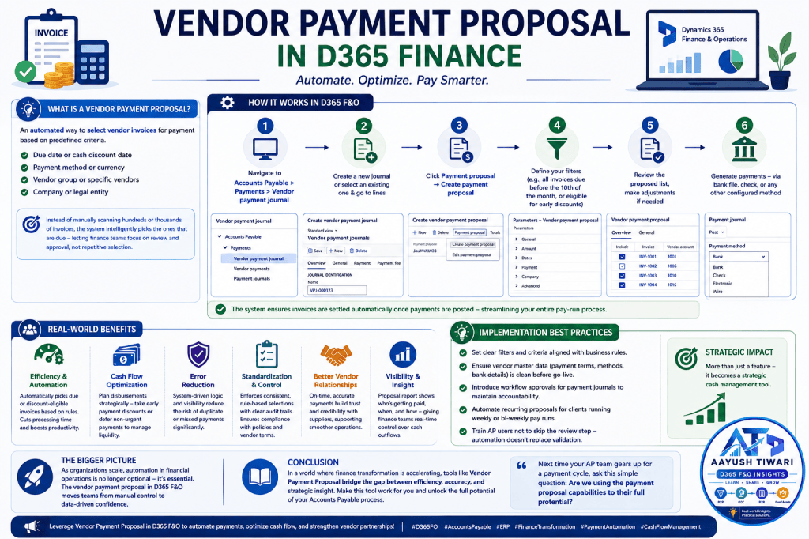
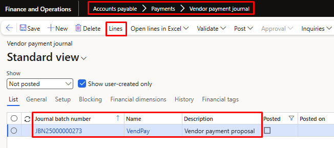
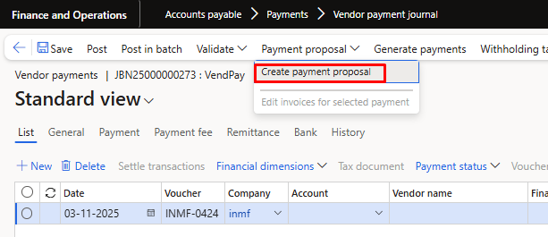
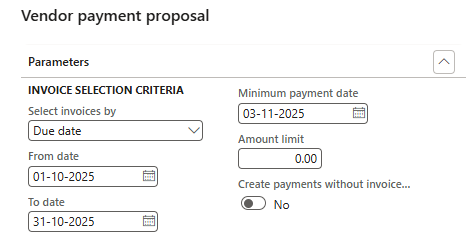
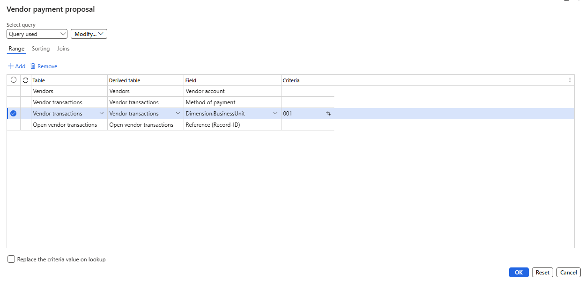
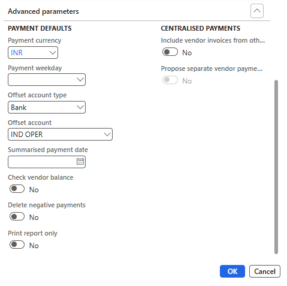

Vendor Payment Proposal in D365 Finance
One of the most underrated yet powerful tools I’ve seen in Dynamics 365 Finance & Operations is the Vendor Payment Proposal process.
For anyone who has worked in Accounts Payable, managing vendor payments can often feel like juggling due dates, discounts, payment methods, and approval timelines — all while ensuring compliance and accuracy. That’s where the payment proposal feature steps in as a game-changer.

In simple terms, it’s an automated way to select vendor invoices for payment based on predefined criteria such as:
- Due date or cash discount date
- Payment method or currency
- Vendor group or specific vendors
- Company or legal entity
Instead of manually scanning through hundreds (or thousands) of invoices, the system intelligently picks the ones that are due — letting finance teams focus on review and approval rather than repetitive selection.
- Navigate to: Accounts Payable > Payments > Vendor payment journal
- Create a new journal or select an existing one & go to lines.

Create vendor payment journal- Click Payment proposal → Create payment proposal

Create vendor payment proposal- Define your filters (e.g., all invoices due before the 10th of the month, or eligible for early payment discounts)

Parameters of vendor payment proposal
Records to include of vendor payment proposal.
Advance parameters of vendor payment proposal- Review the proposed list, make adjustments if needed
- Generate payments — via bank file, check, or any other configured method
The system ensures invoices are settled automatically once payments are posted — streamlining your entire pay-run process.
Here’s why this functionality creates real business impact:
Efficiency & Automation: No more manual invoice selection — proposals automatically pick due or discount-eligible invoices based on your rules. This cuts processing time dramatically and frees the AP team to focus on review and approvals.
Cash Flow Optimization: Finance teams can plan disbursements strategically — taking early payment discounts or deferring non-urgent payments to manage liquidity.
Error Reduction: With system-driven logic and clear visibility, the risk of duplicate or missed payments drops significantly.
Standardization & Control: The process enforces consistent, rule-based selections and maintains clear audit trails — reducing payment errors and ensuring compliance with internal policies and vendor terms.
Better Vendor Relationships: On-time, accurate payments build trust and credibility with suppliers — which ultimately supports smoother operations.
Visibility & Insight: The proposal report shows who’s getting paid, when, and how — giving finance teams real-time control over cash outflows.
Having implemented this process across industries — from automobile and beauty to jewelry and manufacturing — here are a few lessons I’ve learned:
- Set clear filters and criteria aligned with business rules.
- Ensure vendor master data (payment terms, methods, bank details) is clean before go-live.
- Introduce workflow approvals for payment journals to maintain accountability.
- Automate recurring proposals for clients running weekly or bi-weekly pay runs.
- Train AP users not to skip the review step — automation doesn’t replace validation.
When implemented thoughtfully, the payment proposal becomes more than just a feature — it becomes a strategic cash management tool.
As organizations scale, automation in financial operations is no longer optional — it’s essential. The vendor payment proposal in D365 F&O embodies that shift: moving teams from manual control to data-driven confidence.
In a world where finance transformation is accelerating, tools like Vendor Payment Proposal bridge the gap between efficiency, accuracy, and strategic insight.
If you’re part of a D365 F&O journey — whether as a consultant, finance professional, or system user — it’s time to make this tool work for you.
So next time your AP team gears up for a payment cycle, ask this simple question: Are we using the payment proposal capabilities to their full potential?